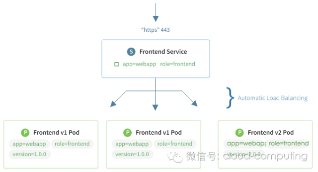

服务发现与负载均衡
Kubernetes在设计之初就充分考虑了针对容器的服务发现与负载均衡机制，提供了Service资源，并通过kube-proxy配合cloud provider来适应不同的应用场景。随着kubernetes用户的激增，用户场景的不断丰富，又产生了一些新的负载均衡机制。目前，kubernetes中的负载均衡大致可以分为以下几种机制，每种机制都有其特定的应用场景：
- Service：直接用Service提供cluster内部的负载均衡，并借助cloud provider提供的LB提供外部访问
- Ingress Controller：还是用Service提供cluster内部的负载均衡，但是通过自定义LB提供外部访问
- Service Load Balancer：把load balancer直接跑在容器中，实现Bare Metal的Service Load Balancer
- Custom Load Balancer：自定义负载均衡，并替代kube-proxy，一般在物理部署Kubernetes时使用，方便接入公司已有的外部服务
Service

Service是对一组提供相同功能的Pods的抽象，并为它们提供一个统一的入口。借助Service，应用可以方便的实现服务发现与负载均衡，并实现应用的零宕机升级。Service通过标签来选取服务后端，一般配合Replication Controller或者Deployment来保证后端容器的正常运行。
Service有三种类型：
- ClusterIP：默认类型，自动分配一个仅cluster内部可以访问的虚拟IP
- NodePort：在ClusterIP基础上为Service在每台机器上绑定一个端口，这样就可以通过
<NodeIP>:NodePort来访问改服务 - LoadBalancer：在NodePort的基础上，借助cloud provider创建一个外部的负载均衡器，并将请求转发到
<NodeIP>:NodePort
另外，也可以讲已有的服务以Service的形式加入到Kubernetes集群中来，只需要在创建Service的时候不指定Label selector，而是在Service创建好后手动为其添加endpoint。
Ingress Controller
Service虽然解决了服务发现和负载均衡的问题，但它在使用上还是有一些限制，比如
－ 只支持4层负载均衡，没有7层功能
－ 对外访问的时候，NodePort类型需要在外部搭建额外的负载均衡，而LoadBalancer要求kubernetes必须跑在支持的cloud provider上面
Ingress就是为了解决这些限制而引入的新资源，主要用来将服务暴露到cluster外面，并且可以自定义服务的访问策略。比如想要通过负载均衡器实现不同子域名到不同服务的访问：
|
可以这样来定义Ingress：
|
注意Ingress本身并不会自动创建负载均衡器，cluster中需要运行一个ingress controller来根据Ingress的定义来管理负载均衡器。目前社区提供了nginx和gce的参考实现。
Service Load Balancer
在Ingress出现以前，Service Load Balancer是推荐的解决Service局限性的方式。Service Load Balancer将haproxy跑在容器中，并监控service和endpoint的变化，通过容器IP对外提供4层和7层负载均衡服务。
社区提供的Service Load Balancer支持四种负载均衡协议：TCP、HTTP、HTTPS和SSL TERMINATION，并支持ACL访问控制。
Custom Load Balancer
虽然Kubernetes提供了丰富的负载均衡机制，但在实际使用的时候，还是会碰到一些复杂的场景是它不能支持的，比如
- 接入已有的负载均衡设备
- 多租户网络情况下，容器网络和主机网络是隔离的，这样
kube-proxy就不能正常工作
这个时候就可以自定义组件，并代替kube-proxy来做负载均衡。基本的思路是监控kubernetes中service和endpoints的变化，并根据这些变化来配置负载均衡器。比如weave flux、nginx plus、kube2haproxy等
参考资料
- http://kubernetes.io/docs/user-guide/services/
- http://kubernetes.io/docs/user-guide/ingress/
- https://github.com/kubernetes/contrib/tree/master/service-loadbalancer
- https://www.nginx.com/blog/load-balancing-kubernetes-services-nginx-plus/
- https://github.com/weaveworks/flux
- https://github.com/AdoHe/kube2haproxy